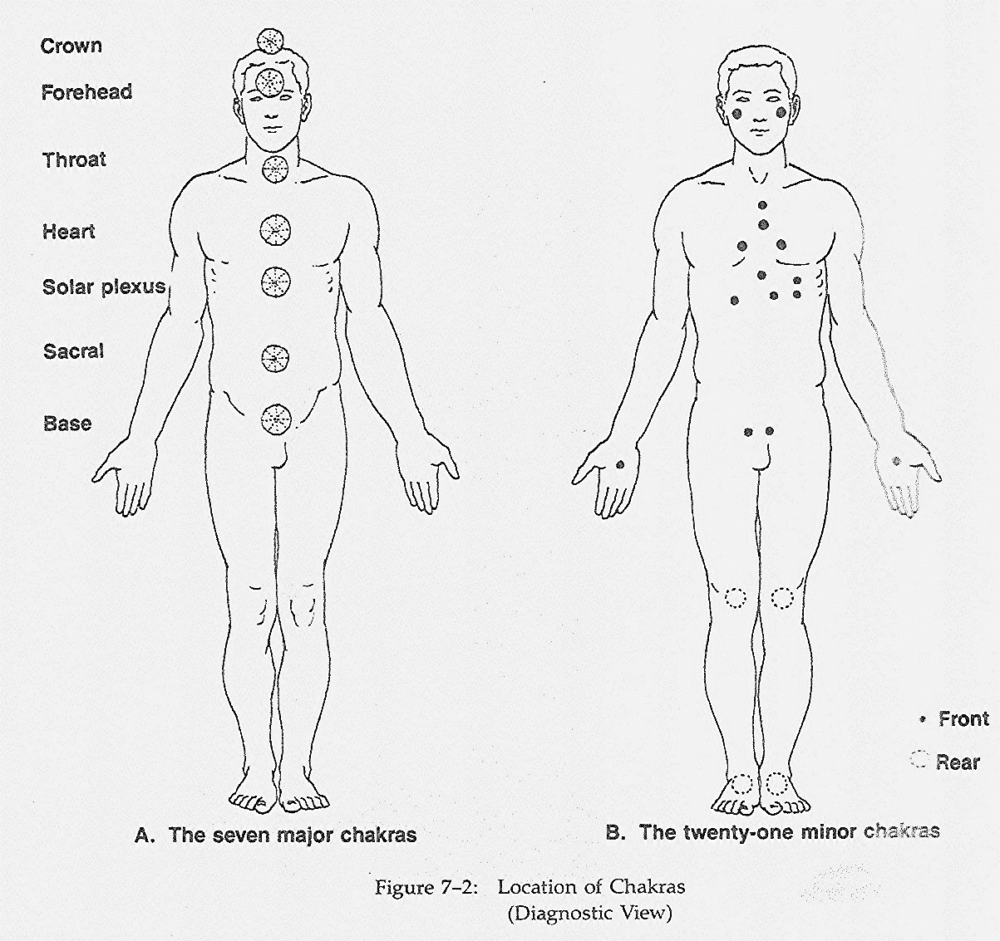
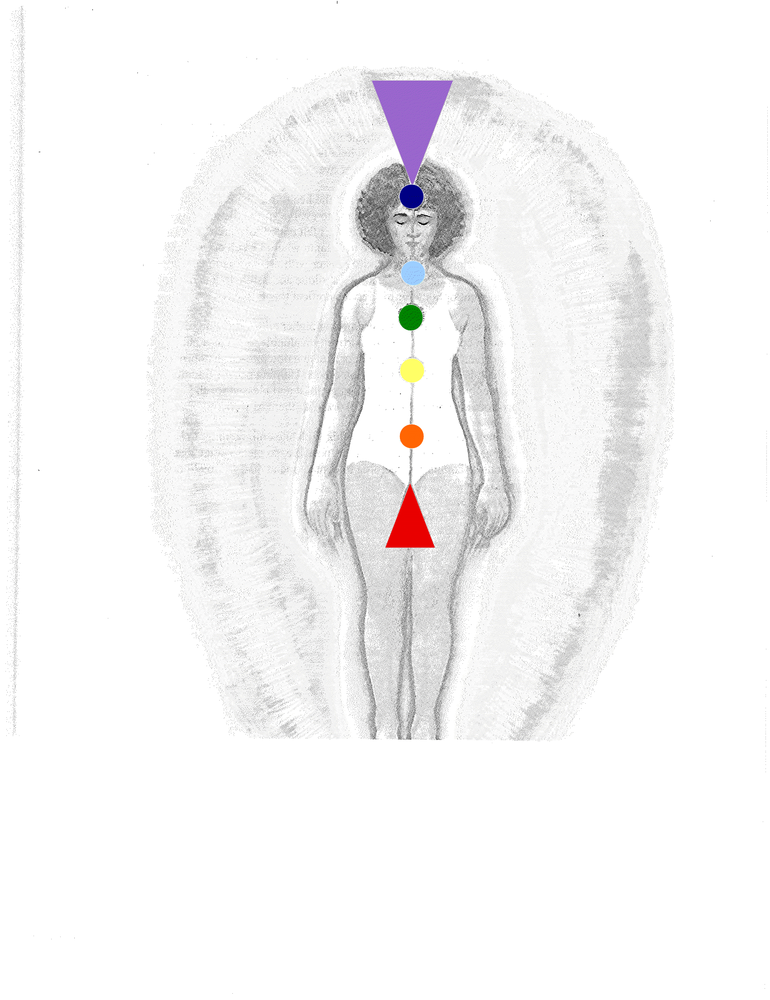

All the
major chakras, minor chakras, and acupuncture points
are openings for energy to flow into and out of the
aura. We are like sponges in the energy sea around
us. Since this energy is always associated with a
form of consciousness, we experience the energy we
exchange in terms of seeing, hearing, sensing,
intuiting or direct knowing.

Therefore,
we can see that staying “open” means two things.
First, it means absorbing a lot of energy from the
universal field through all the chakras, large and
small. Second, it means letting in, and in some way
dealing with, all the energetic information that is
associated with the energy that is flowing through
us. That is not an easy task, and most of us cannot
do it. There would simply be too much input.
Psychological material related to each chakra is
brought to consciousness by increasing one’s energy
flow through that chakra. Too much psychological
material would be released by a sudden flow of
energy, and we could not process it all. We
therefore work in whatever growth process we are in
to open each chakra slowly, so that we have time to
process the personal material that is released and
integrate the new information into our life.

It is
important to open the chakras and increase our
energy flow, because the more energy we let flow,
the healthier we are. Illness in the system is
caused by an imbalance of energy or a blocking of
the flow of energy. In other words, lack of flow in
the human energy system eventually leads to
disease. It also distorts our perceptions and
dampens our feelings and thus interferes with a
smooth experience of full life. We are not
psychologically prepared, however, to stay open
without working and developing our maturity and
clarity.

Each of the
seven main chakras has one or more areas of the body
that it governs along with a color association.
There are also common chakra characteristics when a
chakra is too open, blocked or balanced. Please
check out the chart that I have listed below:
1 -
Root Chakra: Spinal column, adrenals, and
kidneys
Color Association: Red
Too
Open (chakra spins too fast)-bullying,
overly materialistic, self-centered, engages in
physical foolhardiness
Blocked (chakra spins sluggishly or not at
all)-emotionally needy, low self-esteem,
self-destructive behavior, fearful
Balanced (chakra maintains equilibrium and
spins at correct vibration speed)-demonstrates
self-mastery, high physical energy, grounded healthy
2 -
Sacral Chakra: Reproductive system and
gonads
Color association:
Too
Open (chakra spins too fast)-emotionally
unbalanced, a fantasist, manipulative, sexually
addictive
Blocked (chakra spins sluggishly or not at
all)-over-sensitive, hard on self, feels guilty for
no reason, frigid or impotent
Balanced (chakra maintains equilibrium and
spins at correct vibration speed)-trusting,
expressive, attuned to own feelings, creative
3 -
Solar Plexus Chakra: Stomach, liver, gall
bladder, nervous system, and pancreas
Color association: Yellow
Too
Open (chakra spins too fast)-angry,
controlling, workaholic, judgmental and superior
Blocked (chakra spins sluggishly or not at
all)-overly concerned with what others think,
fearful of being alone, insecure, needs constant
reassurance
Balanced (chakra maintains equilibrium and
spins at correct vibration speed)-respects self and
others, has personal power, spontaneous, uninhibited
4 -
Heart Chakra: Heart, blood, circulatory
system and thymus gland
Color association: Green/Pink
Too
Open (chakra spins too fast)-possessive,
loves conditionally, withholds emotionally “to
punish”, overly dramatic
Blocked (chakra spins sluggishly or not at
all)-fears rejection, loves too much, feels unworthy
to receive love, self-pitying
Balanced (chakra maintains equilibrium and
spins at correct vibration speed)-compassionate,
loves unconditionally, nurturing, desires spiritual
experience in lovemaking
5 -
Throat Chakra: Bronchial and vocal
apparatus, lungs, alimentary canal and thyroid gland
Color association: Sky Blue
Too
Open (chakra spins too
fast)-over-talkative, dogmatic, self-righteous,
arrogant
Blocked (chakra spins sluggishly or not at
all)-holds back from self-expression, unreliable,
holds inconsistent views
Balanced (chakra maintains equilibrium and
spins at correct vibration speed)-good communicator,
contented, finds it easy to meditate, artistically
inspired
6 -
Third Eye Chakra: Lower brain, left eye,
ears, nose, nervous system and pituitary gland
Color association: Indigo (deep dark purplish blue)
Too
Open (chakra spins too fast)-highly
logical, dogmatic, authoritarian, arrogant
Blocked (chakra spins sluggishly or not at
all)-undisciplined, fears success, tendency toward
schizophrenia, sets sights too low
Balanced (chakra maintains equilibrium and
spins at correct vibration speed)-charismatic,
highly intuitive, not attached to material things,
may experience unusual phenomena
7 -
Crown Chakra: Upper brain, right eye and
pineal gland
Color association: Violet/Gold/White
Too
Open (chakra spins too fast)-psychotic or
manic depressive, confused sexual expression,
frustrated, sense of unrealized power
Blocked (chakra spins sluggishly or not at
all)-constantly exhausted, can’t make decisions, no
sense of “belonging”
Balanced (chakra maintains equilibrium and
spins at correct vibration speed)-magnetic
personality, achieves “miracles” in life,
transcendent, at peace with self
If you would
like to make your own study of the information above
please reference the books where most of this info
was found:
The Book of
Chakra Healing by Liz Simpson (foreword by Teresa
Hale)
Hands of Light by Barbara Ann Brennan (illustrated by Jos. A. Smith)